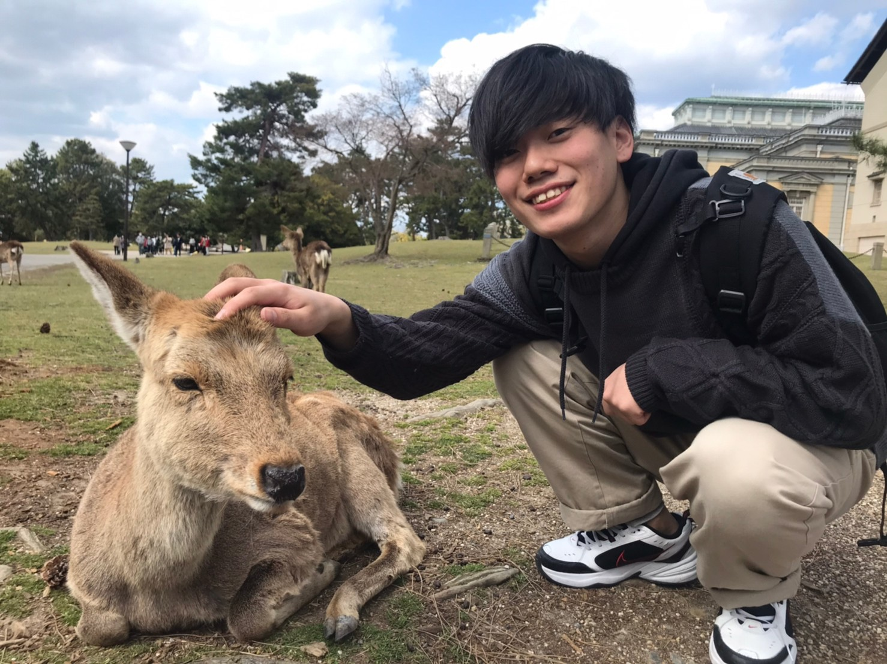

E-mail

本ホームページにようこそ！大阪大学大学院基礎工学研究科M１の長門秀征です． 原田研究室に所属しており，産業用ロボットを用いて，密接に複数の物体が置かれた環境から対象物を取り出す研究をしています．
News
My Profile
Research
卒業研究を紹介します．本研究を日本語でロボティックス・メカトロニクス講演会 2021 in Osakaで，英語で ICAROB 2022 にて発表しました.

Abstract
It is challenging to retrieve a target object from a randomly stacked pile by using a robot due to the occlusion of the target object. In this study, we propose a novel retrieval method in which a robot selects the viewpose to observe the occlusion part of the target object using the RGB-D images, and then selects the motion of grasping/dragging to retrieve the object depending on the configuration of the pile. We experimentally confirm that a robot effectively observes a pile with a complex configuration and successfully retrieves a target object.
Contact
Location
©COPYRIGHT 2021 SHUSEI NAGATO